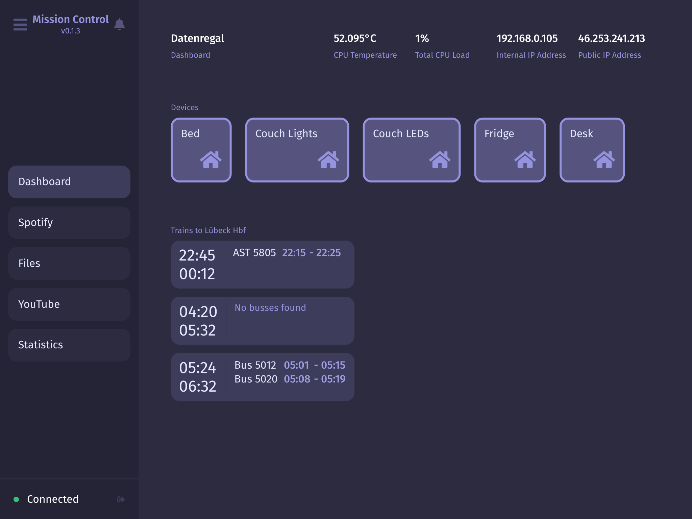

When you start setting up software for your home – be it home automation, a NAS system or something else – you’ll end up having a few different dashboards for control, that are all kind of ugly anyway. That’s where Mission Control comes in. It is a beatutiful and easy-to-configure dashboard system for your home!
Features
- Control your HomeKit devices on the dashboard
- Embeddable file browser, youtube downloader and Spotify player
- Sleek, customizable UI
Installation
Install mission-control and the single-sign-on auth server. Unless reconfigured, mission control will launch a single-sign-on server as a node subprocess.
$ npm install -g @capevace/mission-control@next
Usage
You can now start the server like you would any binary.
$ mission-control --version
v2.0.0-rc6
Options
Usage: mission-control [options]
Options:
-V, --version output the version number
-u, --url <url> the url mission control is reachable at
-p, --port <port> the port to use for mission control
-n, --no-sso disable internal auth server process (to use own)
--auth-url <url> the url to use for the single-sign-on server
--auth-port <port> the port to use for the single-sign-on server
-h, --help display help for command
Config
A config file for mission-control will be created at $HOME_DIR/.mission-control/config. This can also be used to configure mission-control. However, options passed as command line arguments override settings in this file.
Screenshots

Changelog
Version 2.0.0 (pre-release)
- Completely redesigned dashboard UI
- Introduction of a flexible plugin system
- Authentication is now handled by Mission Control itself, single-sign-on is no longer required
- Users now have profiles, which will be integrated with a solid permission system
- Tons of bug fixes
Version 0.5.4
- Rewrote logging system
Version 0.5.3
- Added COVID widget to dashboard
Version 0.5.2
- Fixed bahn algorithm skipping not displaying trains with SEV present
Version 0.5.1
- Fixed dashboard layout now being loaded from database correctly
Version 0.5.0
- New Dashboard is now customizeable
Version 0.4.2
- Fixes error preventing the auth proxy from returning properly
Version 0.4.1
- Fixes some minor security issues with dependencies
Version 0.4.0
- The SSO server is now being proxied by default. This can be disabled with the
--no-proxyoption or by disabling it in the config file. - Instead of localhost, the default url is now the local ip
FAQ
Running Mission Control on port 80
On Linux, running an http server on port 80 requires root priviliges. Generally this isn't a problem as you can simply sudo mission-control -p 80 which works, but this approach falls apart when using systemd.
I found this workaround which seems to be the safest option to use instead:
sudo apt-get install libcap2-bin
sudo setcap 'cap_net_bind_service=+ep' /usr/bin/node # Replace path to node binary
Authors
Lukas Mateffy – @Capevace – mateffy.me
Distributed under the MIT license. See LICENSE for more information.
Contributing
- Fork it (https://github.com/capevace/mission-control/fork)
- Create your feature branch (
git checkout -b feature/fooBar) - Commit your changes (
git commit -am 'Add some fooBar') - Push to the branch (
git push origin feature/fooBar) - Create a new Pull Request